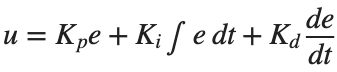
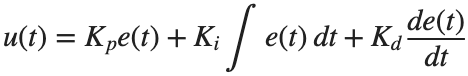
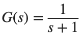
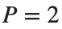
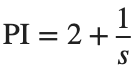

PID Control · 학습
실행 조건
MATLAB · Control System Toolbox
이번에 배울 내용
빠른 응답만 보고 Gain을 고르면 Overshoot나 모델 변화에 취약할 수 있습니다. 서로 다른 성능 지표를 비교합니다.
전체 흐름
목표와 오차 → P·I·D 명령 → 입력 한계 → 응답·적분 상태
현재·누적·변화하는 오차
PID는

로 표현합니다. P는 현재 오차, I는 남아 있는 오차의 누적, D는 빠른 변화에 반응합니다. Gain의 효과는 Plant와 관측 시간에 따라 달라지므로 같은 입력·시간축에서 비교합니다.
입력 제한이 있는 실제 제어
출력 전압이나 토크에는 한계가 있습니다. u가 이미 최대인데 적분값이 계속 쌓이면, 목표를 낮춘 뒤에도 큰 명령이 남을 수 있습니다. Conditional integration은 입력이 포화된 동안 오차를 더 키우는 적분 누적을 멈추는 한 방법입니다.
오차를 누적하는 이유

에서
와
를 비교합니다. 간단한 Plant로 Steady-State Error를 먼저 확인하고 실습에서 Motor로 옮깁니다.%% Worked example
s=tf('s'); G=1/(s+1); t=linspace(0,12,601)';
controllers={2,2+1/s}; names={'P','PI'};
figure; hold on
for i=1:numel(controllers)
T=feedback(controllers{i}*G,1); [y,tm]=step(T,t);
plot(tm,y,'DisplayName',names{i}); fprintf('%s DC Gain: %.9g\n',names{i},dcgain(T));
end
yline(1,'--'); xlabel('Time [s]'); ylabel('Output'); legend; grid on
참고 예제
추가 예제 보기
참고 자료